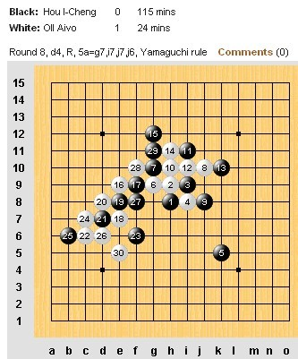
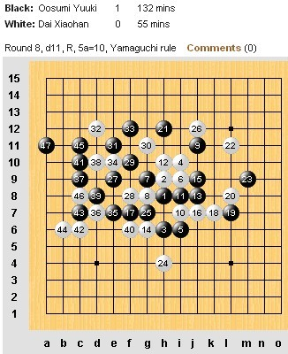
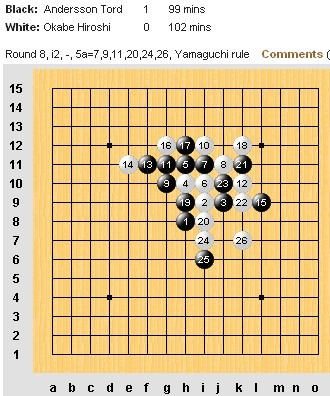
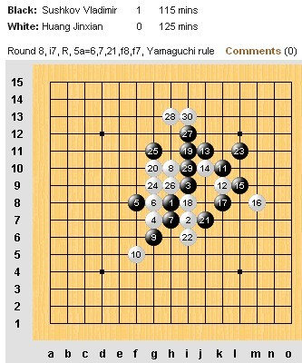
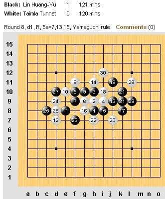
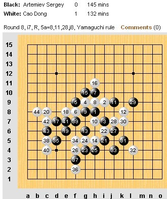

世锦赛第八轮榜首同进
作者：通讯员
原文网址链接;http://www.rifchina.com/Article/ShowArticle.asp?ArticleID=6469
第十二届五子棋世界锦标赛A组第八轮，爱沙尼亚爱・欧艾沃(Aivo Oll )用时24分钟轻取中华台北侯宜呈 (Hou I-Cheng)。中国选手戴晓涵瑞星执白负于日本大角友希 (Osumi Yuki)。日本冈部宽 (Okabe Hiroshi)战胜瑞典托・安德森 (Tord Andersson)。中华台北林皇羽战胜爱沙尼亚特・泰姆拉 (Tunnet Taimla)。中国选手黄金贤开局走弱无奈败于俄罗斯弗・苏切科夫 (Vladimir Sushkov)。中国选手曹冬最后时刻战胜俄罗斯谢・阿特米耶夫 (Sergey Artemiev)。
两岸选手曹冬、林皇羽继续以6.5分领跑，不出意外两人将是最后三轮冠军的争夺者。第九轮比赛北京时间今天下午3点开始。








林现在的状态有些不可阻挡，还有2轮对手强要看发挥了